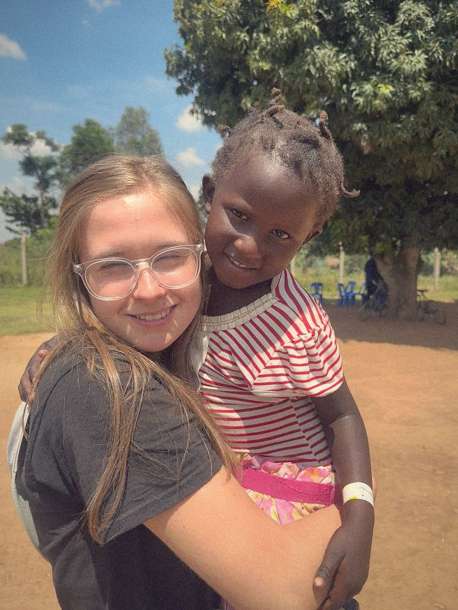
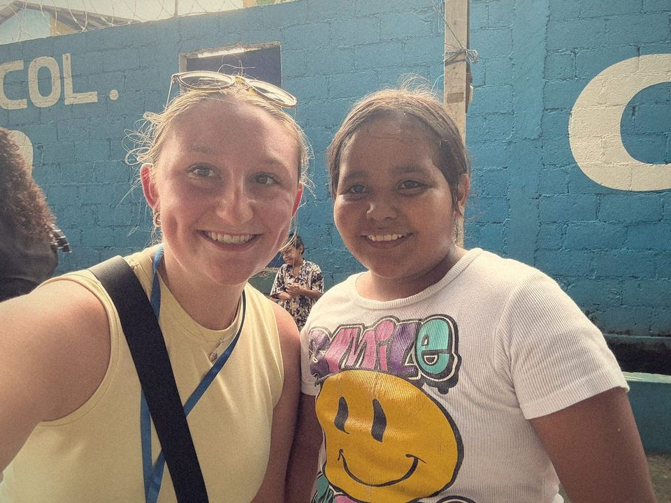
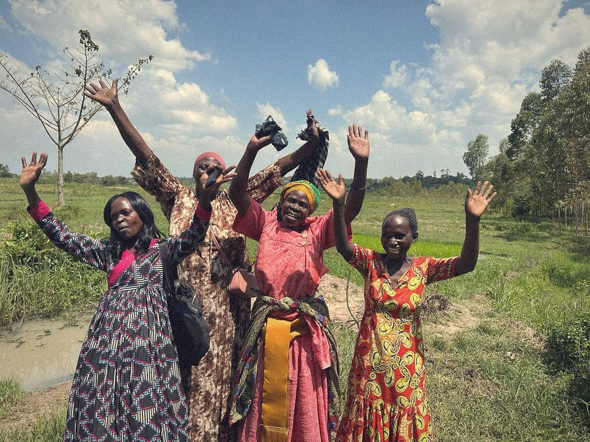

2025 Impact Report
One thread of hope through eight countries
Restoring hope to kids and families around the world since 1973.
Prepared for the H4KI Board of Directors and Staff






2025 at a glance
- 2,704children in the sponsorship program
- 200children added in 2025
- 1,287wells drilled through Water 4 Kids International, cumulative
- 208mission team members served
- 13team trips to 8 countries
- 9.17MMannapack meals provided since 2015
By nearly every measure, Executive Director Ken Howell and staff leadership describe 2025 as “perhaps our best year yet,” marked by strong giving, continued global reach, and record program impact.
Dignity · Education and child sponsorship
Restoring dignity through education
H4KI's Child Sponsorship and Education programs continued to equip children and young adults across our five Uganda schools and partner sites with the tools to build self-sufficient futures.
- 2,704children sponsored
- 131trade and vocational graduates
- 17university graduates
- 4 of 5Uganda schools now cash-flow positive
- 85 students completed their courses at the Brandom Vocational Skills Center.
- Two additional university scholarships were awarded through H4KI's named scholarship funds, in education and biomedical engineering.
- The first cohort from Fairmont Christian Secondary School sat for the national Secondary 4 exam.
- A new Education Committee is assessing schools, facilitating teacher training, and reviewing instructional methods.
- In the Philippines, a solar power project was funded for the preschool to help it reach greater sustainability.
Looking to 2026
- Develop corporate sponsorships to strengthen the long-term sustainability of H4KI schools.
- Launch the 2026 sponsorship campaign, This Is Your Year to Change a Life.
- Complete the transition to a new sponsorship database with flexible boarding, vocational, and university levels.


Health · Water, medical care, and feeding
Building health through water, medicine, and nutrition
Water 4 Kids International (W4KI), H4KI's clean water initiative, had another year of significant reach and generosity from supporters, while the Eggum Family Medical Clinic in Uganda reached a pivotal year.
- 1,287wells drilled to date
- 19well dedications in 2025
- 10Walk 4 Water events
- $387,023raised by walkers, funding 37 wells
- Two large-scale school water projects were completed, one serving 730 students and another providing water and sanitation to 2,235 students.
- The Benicia, California walk was the year's highest-grossing event at $92,000 and drew 250 participants.
- The Eggum Family Medical Clinic is now fully staffed and installed an x-ray machine and ultrasound unit, diagnostic equipment not otherwise available in the district.
- Medical outreach teams saw 508 patients in the Philippines and 273 patients in Guatemala.
- Since 2015, 9,169,280 Mannapack meals have been provided in partnership with FMSC, with roughly $215,000 in in-kind value each year.
Looking to 2026
- Complete licensing and registration of the clinic and its equipment.
- Finish baseline health exams for all sponsored children and open the clinic to the surrounding community.
- Ship a new meal container in 2026, expanding to Namibia or the Philippines.


Joy · Mission teams and trips
Creating joy through connection
H4KI's Teams Department creates space for supporters to experience the work firsthand, building relationships that turn into lifelong partnerships.
- 208team members traveled
- 13trips to 8 countries
- 22youth travelers under 18
- 24young adults under 30
- 49% of travelers were brand new team members and 51% were returning.
- Two new custom group trips were planned for 2026, including a Christian secondary school's first trip to Uganda and a partner church's first trip to Guatemala.
- The team achieved $11,600 in flight savings through H4KI's business mileage program.
- Staff completed Mental Health First Aid training and added new mental health resources to the Team Leader Handbook.
- Teams represented H4KI at the GCU Mission Conference and the MissionConnexion Conference.
Looking to 2026
- Roll out a new Crisis Plan for team safety at the annual Team Leader Meeting.
- Build pre-trip preparation resources under the 2026 theme, Find Your Mission Moment.

Love · Faith, partnership, and global reach
Sharing the love of Jesus around the world
Every H4KI program is grounded in the Love pillar, the conviction that the foundation of all we do is to show the love of Jesus to children and communities we serve. 2025 brought the ministry into an eighth country.
- 8countries served
- 7major buildings completed
- 50,000+people reached by H4KI content
- Nearly 60%email open rate
- Cambodia, new: a Memorandum of Understanding was signed with a local partner ministry alongside the first well-drilling projects.
- Romania: the ASA Community Center was dedicated during a July trip, a gathering space and classroom for sponsored children.
- The Philippines: four homes were completed and six more funded for 2026, plus a covered basketball court extension.
- Namibia: a farm irrigation project and a new community soup kitchen expanded food security.
- Nepal: the first phase of the Saraswati Basic School was dedicated with We Ignite Nations, with phase two under construction.
- Uganda campus: the new H4KI Student Chapel, the Becki Thompson and Cindy Brandom Worship Center, opened November 9, 2025.
Looking to 2026
- Launch the Advocacy Program and continue quarterly Ambassador updates.
- Continue Adopt-a-Village progress at Watson School, Nambwa, Kasolo, and Nyafumba.
Our mission
Four pillars, one mission
Hope 4 Kids International (H4KI) exists to bring hope to children living in poverty through the Four Pillars of Hope. In 2025 H4KI partnered with communities across eight countries, Uganda, Romania, Guatemala, Namibia, Nepal, the Philippines, Mexico, and, new this year, Cambodia, to restore dignity, build health, create joy, and share the love of Jesus.

Global reach
Where the thread went in 2025
Cambodia
New in 2025. MOU signed with a local partner ministry; first wells drilled.
Uganda
New levels of accountability and efficiency; the Board tours projects quarterly.
Philippines
Four homes completed, six more funded; medical and water programs expanding.
Romania
ASA Community Center dedicated in July.
Guatemala
Housing support coordinated for a family in a medical crisis; outreach continued.
Namibia
Farm irrigation project and community soup kitchen completed.
Mexico
Storm-damaged classroom building renovation nearing completion.
Nepal
Saraswati Basic School phase one dedicated, phase two underway.
Financial stewardship
Faithful with every gift
H4KI is committed to transparent, faithful stewardship of every gift entrusted to the ministry. Financial statements are audited annually by an independent CPA firm.
| Measure | Amount |
|---|---|
| Total fundraising, through Oct. 31, 2025 | $4,283,956 |
| Growth vs. year-to-date 2024 | +35% |
| Compared to the 2023 record giving year | within 1% |
| Water 4 Kids well-funding income, Jan to Nov 2025 | $1,186,357 |
| Water 4 Kids well-funding income, Jan to Nov 2024 | $1,213,849 |
| Water 4 Kids well-funding income, 2024 full-year record | $1,508,433 |
| Walk 4 Water total raised, 10 events | $387,023 |
Board governance
Both resolutions were approved unanimously at the December 5, 2025 Board Meeting.
- A $100,000 distribution from H4KI's Arizona Community Foundation reserve fund to support start-up costs for a new supporter data system, beginning January 2026.
- Annual distributions from two named endowment scholarship funds at the Arizona Community Foundation, providing student scholarships beginning January 2026.
Reviewed by H4KI leadership before external use. Figures are through the dates noted and are unaudited year-to-date results.
Looking ahead
Three priorities for 2026
Program development and sustainability
Emphasize operational efficiency and the sustainable funding of existing programs, shifting some focus from new construction toward the ongoing needs of established schools and projects.
New systems
Transition to a new supporter and program database in 2026, enabling flexible sponsorship levels and stronger reporting across every department.
New ideas, new audiences
Launch an Advocacy Program and a Next Generation messaging strategy to engage a new generation of supporters in breaking the cycle of poverty.
“Our impact has never been greater. God is good.”